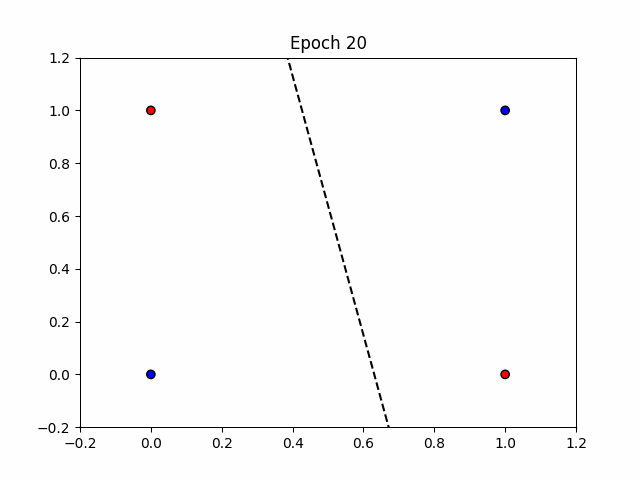
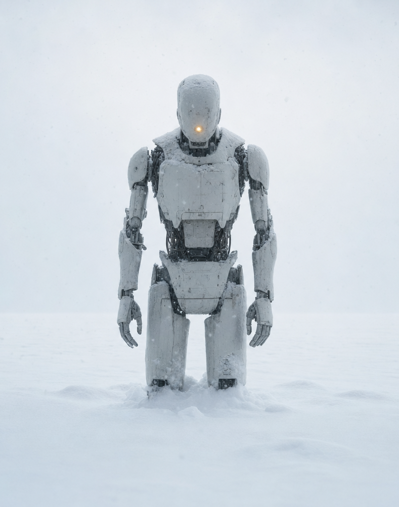
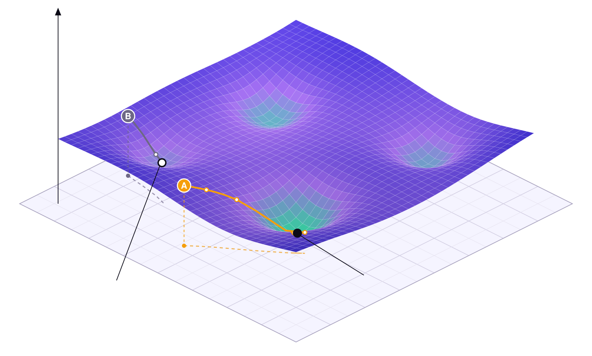

인공신경망
회로로 짜던 것을 데이터로 학습시킨다
07 SLP.ipynb · 08 MLP.ipynb · 09 NeuralNetwork.ipynb
동그라미 하나가 곧 회귀식이다
독립변수에 가중치를 곱해 더하고 절편을 얹는다 — 여기까지는 회귀와 똑같다. 다른 건 마지막에 활성화 함수를 한 번 통과시키는 것뿐이다.
논리연산을 회로로 짜던 시절
AND · OR · NAND 를 쓰려면 그 연산을 하는 회로를 직접 설계해야 했다. 연산 하나에 하드웨어 하나.
회로로 짜던 것을
데이터로 학습시킬 수 있을까?
1957년, 프랭크 로젠블라트가 던진 질문이다.
And·Or·Nand 연산을 데이터를 학습해서 구현할 수 있을까?
직접 학습시켜 보자
틀린 가중치에서 시작해 한 샘플씩 고쳐 나간다 · OR 을 맞추면 목표를 AND 로 바꾼다
와 이게 되네!
선형으로 나뉘는 문제는 퍼셉트론이 푼다

데이터는 불변, 가중치가 변수다
손댈 수 없다. 절대 불변이다.
우리가 바꿀 수 있는 유일한 것이다.
망했어요!
XOR을 못 맞춰요
직선 하나로는 절대 가를 수 없다

XOR도 못 푼다
민스키와 파퍼트, 『Perceptrons』(1969)

풀 수 있다는 건 증명했다.
학습법은 못 찾았다.
층을 쌓으면 XOR 을 풀 수 있다
그 가중치에 어떻게 도달하는지
레고처럼 조립해 다양한 문제를 푼다
입력 2개 · 은닉 2개 · 출력 1개 — 가중치와 편향만 바꿔 끼우면 된다
층 하나 넣었더니 가중치가 세 배
곱하고 더한 뒤, 구부린다
신경망은 오차를 최소화하며 학습한다
바닥면은 가중치 공간 (w₁, w₂) · 높이는 그 가중치가 만드는 제곱오차 E · 출발점에 따라 도착지가 갈린다

차이를 재는 자를 먼저 정한다
이 그림은 사실 9차원이다
밑면의 점 하나 = 가중치 9개에 값이 하나씩 배정된 상태. 실제로는 −∞ ~ +∞ 의 9차원이다.
높이 = 손실. 낮을수록 데이터를 잘 맞춘다.
정수만 훑어도 1009
가중치 9개를 −100 부터 100 까지 정수로만 훑는다고 해도 경우의 수가 이만큼이다.
그런데 실제 모델의 가중치는 9개가 아니라 수십만 개다. 전수 탐색은 시작도 못 한다.
지도를 보고 내려가는 게 아니다
- 앞 장의 곡면은 우리가 그린 그림이다. 알고리즘은 그 지도를 갖고 있지 않다
- 알 수 있는 건 지금 서 있는 자리의 기울기 하나뿐
- 그 방향으로 조금 옮기고, 거기서 다시 잰다 — 이것만 반복한다
- 그래서 출발점이 도착지를 바꾼다
방법을 아는데 계산을 못 했다
- 가중치 하나를 고치려면 그 가중치가 최종 오차에 얼마나 기여했는지를 알아야 한다
- 그런데 층이 쌓이면 그 영향은 뒤쪽 층의 모든 가중치를 거쳐서 전달된다
- Affine → 활성화 → Affine → 활성화 … 층마다 항이 늘어난다
- 직접 미분해서는 식이 감당이 안 됐다
층이 열 개면 σ 를 열 번 지난다.
연쇄법칙이 길을 냈다
연쇄법칙(chain rule)을 이용해 오류를 출력층부터 순차적으로 전파하는 방법을 제시
= ∂Loss/∂Yhat × ∂Yhat/∂Z2 × ∂Z2/∂W2[0,0]
Nature 323, 533–536
제프리 힌튼
지금 딥러닝의 거의 전부가 이 논문 위에 서 있다
역전파 알고리즘 1986

한 단계씩 계산해 보자
입력 2 · 은닉 2 · 출력 1 · XOR 4행 배치편미분끼리는 서로를 기다리지 않는다
순전파가 끝나면 각 가중치의 편미분에서 다른 가중치는 전부 상수다. 미분하면 0 이 되어 날아간다.
신경망이 최강자가 된 이유는 정확도가 아니라 이 계산 구조다.
한참 헤매다 어느 순간 떨어진다
여기까지가 학습의 전부다
- 노드 하나 = 회귀식 + 활성화 함수
- 학습 = 데이터를 고정한 채 가중치만 움직이는 일
- 방향은 손실의 기울기가 알려 주고, 기울기는 연쇄법칙으로 뒤에서부터 구한다
09 NeuralNetwork.ipynb · 10 DeepNN.ipynb